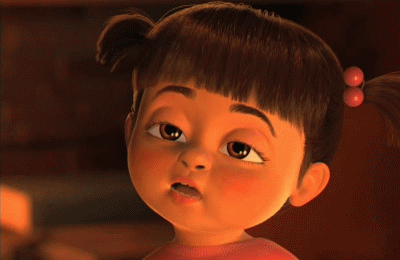

Joshua's Interview
1. Where are you from? South Jamaica, Queens
2. Are you in Communication Design? If so, why did you decide to take this major? Yes, I am in communication, I decided that major because I think communication design is a middle ground to other mediums.
3. How old are you? 21
4. Do you have siblings? Yes, 3
5. What did you do this summer vacation? Went to Portland,OR and Orlando, FL
6. What is your hobby? Rapping
7. Do you like listening to music? If so, what is your favorite genre or singer? Yes, I like many genres, mainly trap music right now
8. What do you want to be or do after graduating college? I want to be a rapper and designer
9. What is the one thing you would like to have right now? New Apartment
10. Where do you want to live after graduating? London
